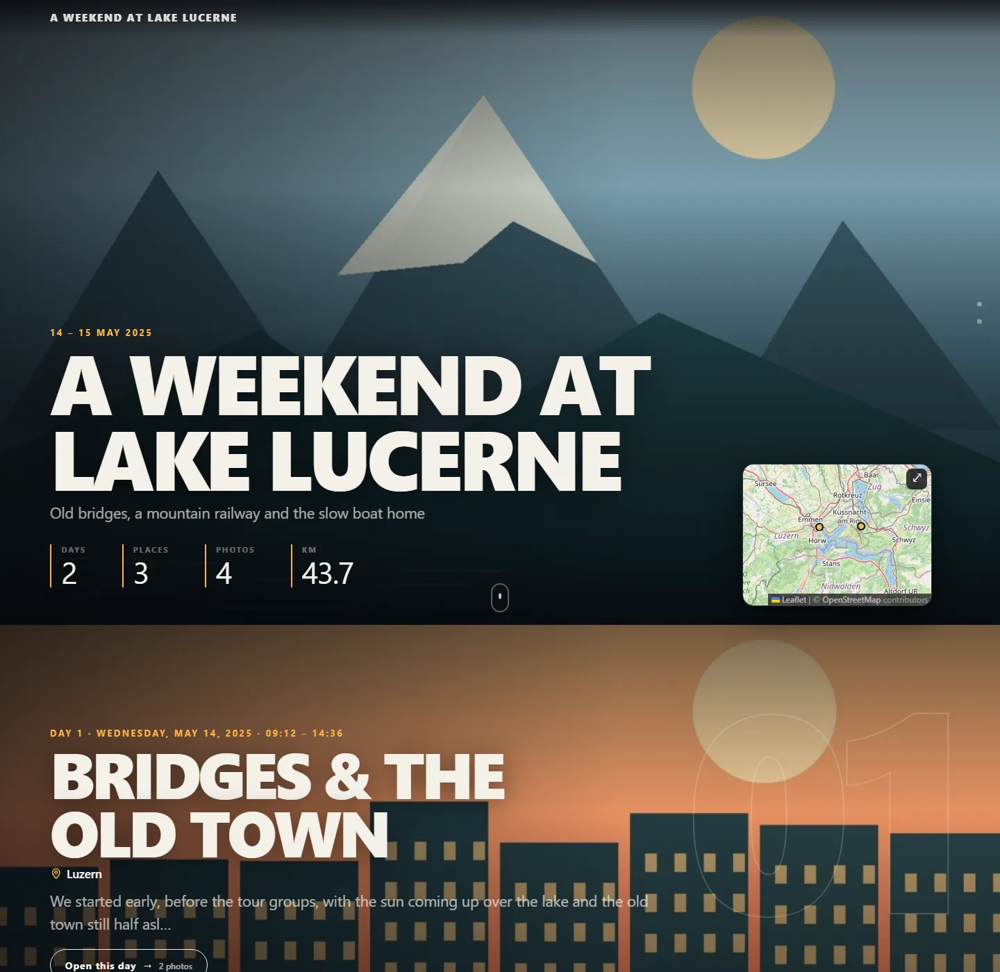
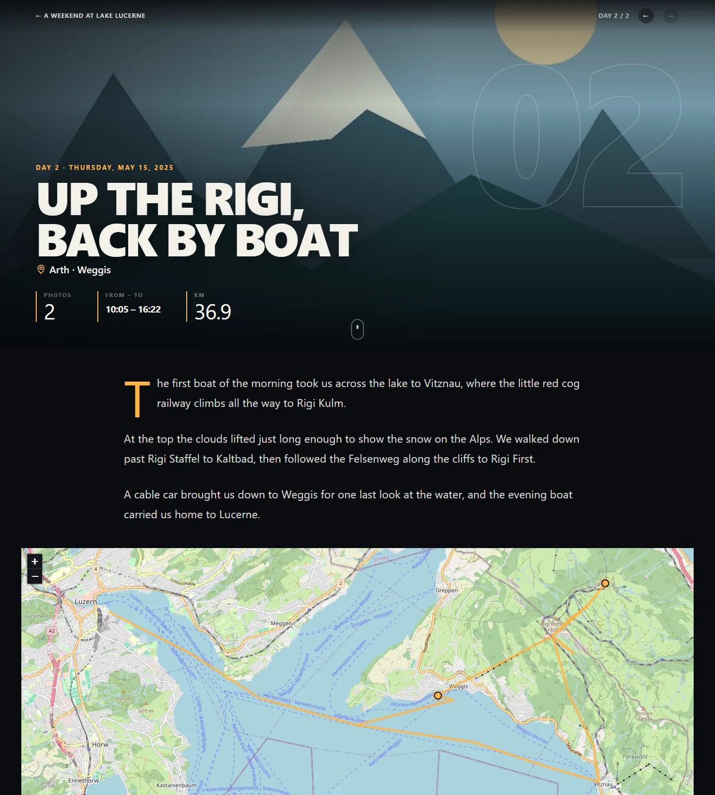
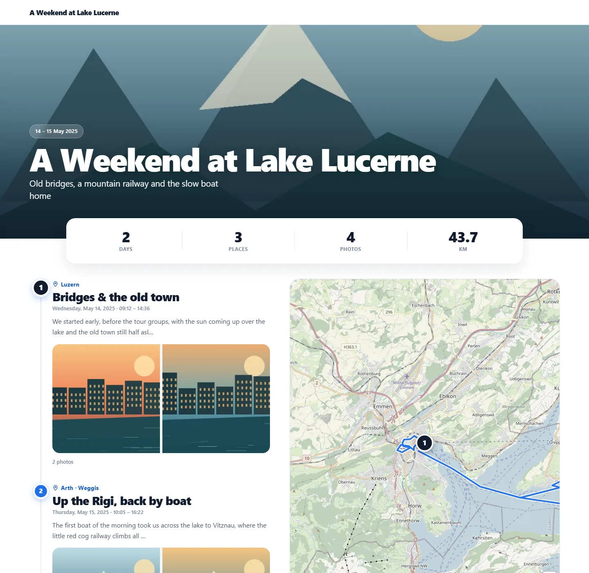
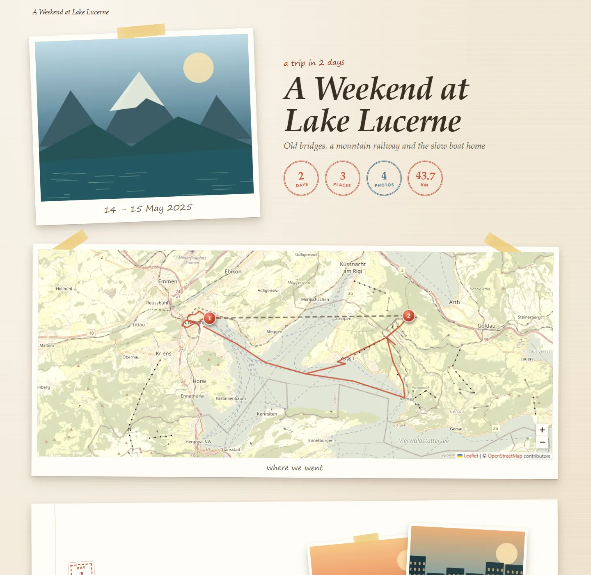
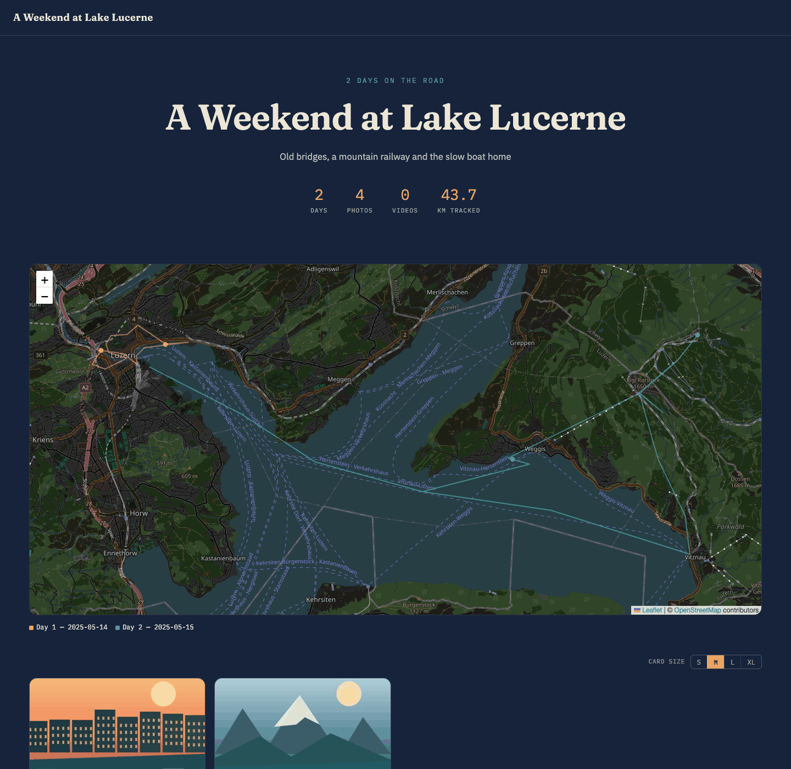
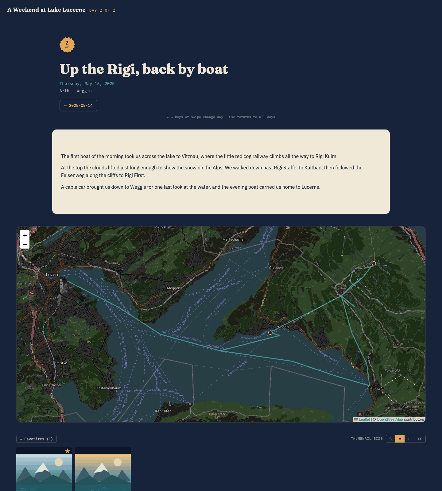
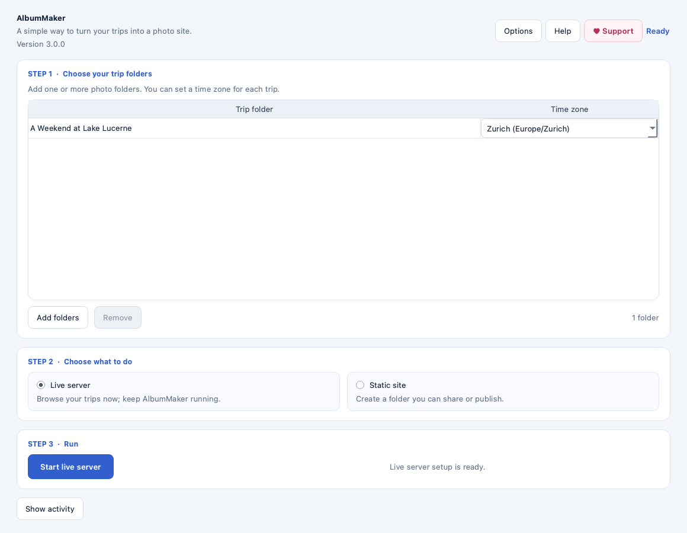

Links that look great in chat
Paste a trip or day link into WhatsApp, iMessage, Telegram or Slack and friends see the cover photo, the title and the dates, in every look.
Turn your travel photos, videos, and GPS tracks into beautiful interactive travel websites. AlbumMaker automatically builds day-by-day stories with maps, routes, and full-screen galleries, in the look you choose: cinematic, journal, scrapbook or classic. Your media stays private with 100% local processing, and you can easily share trips locally or publish them anywhere as a static website.
Free for noncommercial use. Windows, macOS and Linux. Click any look to open a live sample trip.


AlbumMaker reads the dates and locations already stored in your files, so you only type a title or a story if you want to.
The homepage shows the trip title, how many days, photos and kilometres it covers, and a map of where you went, with a scene or card for every day.
Photos and videos are grouped by when they were taken, with the place names, your story of the day and the day's route above the gallery.
Shown in the Scrapbook look.
Give every day a title and a few paragraphs of what happened, right in the page while the live server runs. Everything is kept in one plain trip_content.json file next to your photos, where you also set the trip's title and subtitle and can edit any text by hand.
Recorded a track with your watch, phone or bike computer? Drop the .gpx file into the trip folder. AlbumMaker draws the way you actually went, adds up the kilometres, and puts photos from a camera without GPS on the map by matching their times to the track.
Shown in the Journal look.
Paste a trip or day link into WhatsApp, iMessage, Telegram or Slack and friends see the cover photo, the title and the dates, in every look.
Switch on the optional Ken Burns pan and zoom with one button or the K key. It is off by default, remembered by the browser and skips videos.
Stray GPS jumps are cut out of your track, and a flight between continents is drawn as two routes instead of one line straight across the map.
With the live server, write day titles and stories, add captions, mark favourites, hide photos and choose covers without opening a file.
Handles common photo and video formats, pairs Live Photos, and skips duplicates and system clutter on its own.
Photos with GPS get a place name from a bundled database, so this step does not need the internet.
Keep the map library and fonts on your computer, so pages and photos work without a connection. The live server also keeps the map tiles you have viewed; elsewhere the maps fall back to a simple land outline.
Pick a time zone for each trip, so videos that record UTC land on the correct day and photos match the right point on your GPS track.
Create a static website that can be hosted on virtually any web server, such as GitHub Pages or Apache. Hidden photos are left out, and GPS routes and place names can be left out too. Photo copies are your untouched originals, so metadata embedded in the files travels with them.
Pick the look that suits the trip. Every template shows the same days, photos, maps and stories, with the same full-screen viewer and in-page editing. Only the feel changes. Click a tab, then open its live sample.
Dark and cinematic. Each day is a full-screen scene with a big photo, an outlined day number and a film strip of more photos, fading in as you scroll.
A light, airy look. A full-width cover photo, a floating statistics card and a timeline of numbered steps, one per day, beside a map that follows your scrolling.

Warm paper pages with taped polaroid photos, rubber-stamp statistics, a push-pin map with a dashed route, and lined notebook paper for each day's story.

The original look and still a favourite: dark navy pages, parchment text panels and a card for every day, with a map of the whole route.


Screenshots of the sample trip, a fictional weekend at Lake Lucerne. Maps © OpenStreetMap contributors.
Switch template at any time. Titles, stories, captions, favourites and covers live in one trip_content.json and carry over untouched.
Cinema is used unless you choose otherwise. Use --template on the command line, the Site template setting in the desktop app, or, with several trips on the live server, a menu on the library page that remembers your choice.
Journal, Scrapbook and Cinema use only system fonts, so there is nothing extra to download. Add your own template as a folder of pages and a stylesheet.
Every sample below is the same finished two-day trip, built by AlbumMaker itself: a walk through Lucerne and a day up the Rigi, with a story for each day and the route from a GPS track. Open all four, zoom the map, switch the card size, open a photo and use the arrow keys.
The desktop app walks you through them in one window.
Add one folder, or several to build a library. Set a time zone for each trip if you need to.
Browse and edit on a live server, or create a standalone site to share or publish. Choose Cinema, Journal, Scrapbook or Classic for how it looks.
A clear “please wait” window shows what AlbumMaker is doing, and a big message (plus a flashing taskbar icon) tells you the moment your trips are ready. Open the live site with one button, or find the static site in the folder you chose.

Shown in the light theme. The desktop app opens in a dark theme by default, and you can switch in Options.
No account. No photo uploads. AlbumMaker processes your library locally and does not send your photos to an AlbumMaker service.
The live server listens only on your computer by default. If you turn on local-network access, other devices on your network can view photos that are not hidden, and the server has no login.
Map tiles and, when needed, offline assets come from their stated providers, so those providers can receive network requests. A static site contains copies of the visible media you choose to share. They are your original files, so any metadata embedded in them, such as GPS positions, is included.
Use the desktop app, or run it from the command line if you prefer.
# Python 3.9 or newer pip install -r requirements.txt python album_server.py -i /path/to/photos # then open http://127.0.0.1:8000/
python -m albummaker install-ffmpeg does it with winget or Homebrew)--template journal (or scrapbook, classic) for anotherrequirements-gui.txt for the desktop interface--versionAlbumMaker is made in spare time and is free for personal and other noncommercial use. If it helped you turn your trips into something you enjoy looking back on, you can say thanks with a donation. It keeps the project going: new features, fixes, and testing on Windows, macOS and Linux.
Not in a position to donate? A star on GitHub, a clear bug report or telling a friend who travels helps too. Donations are voluntary: they don't buy features, support or a commercial license, and AlbumMaker works exactly the same either way.